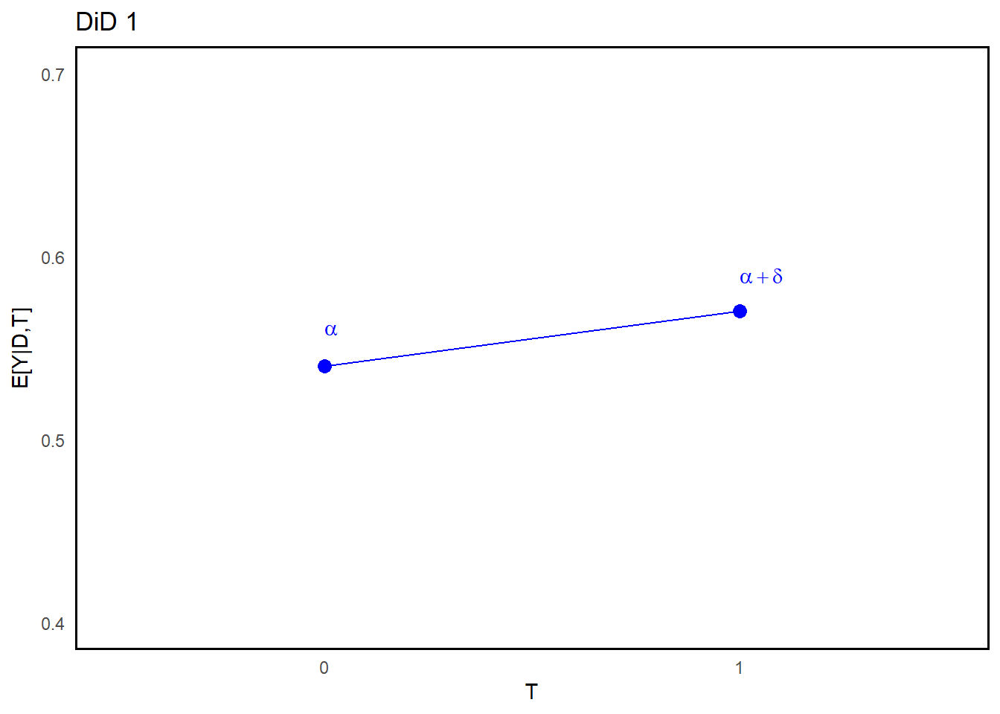
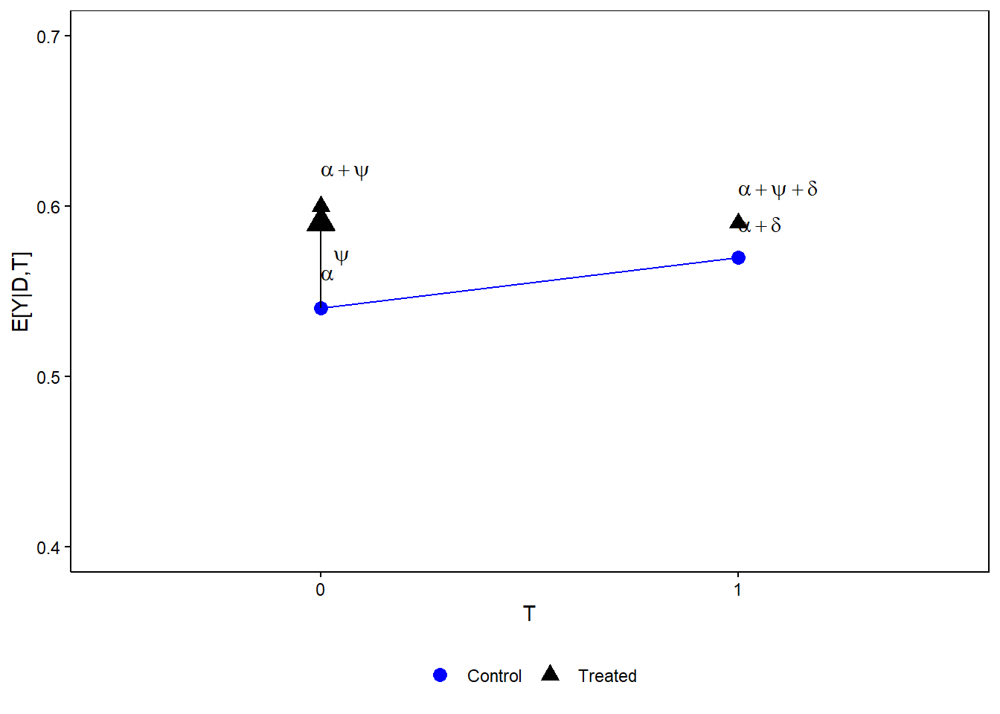
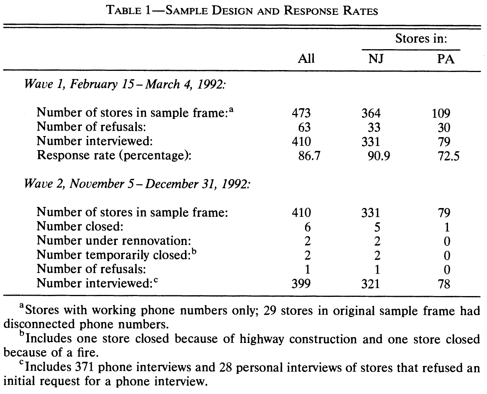
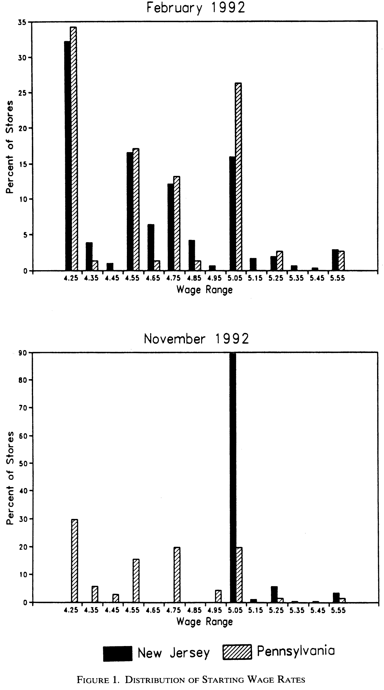
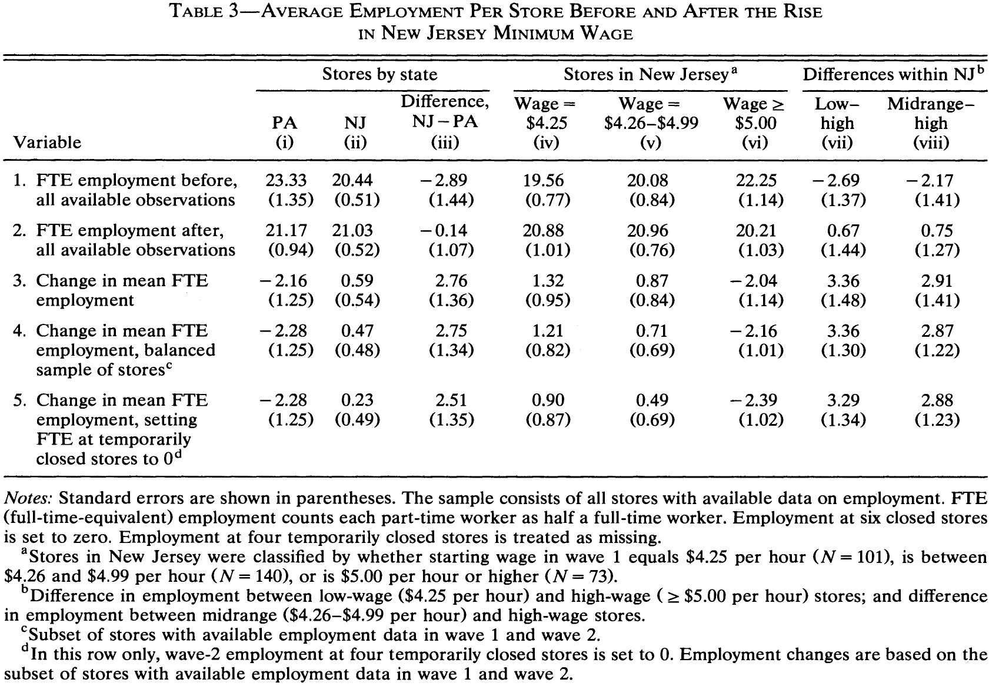
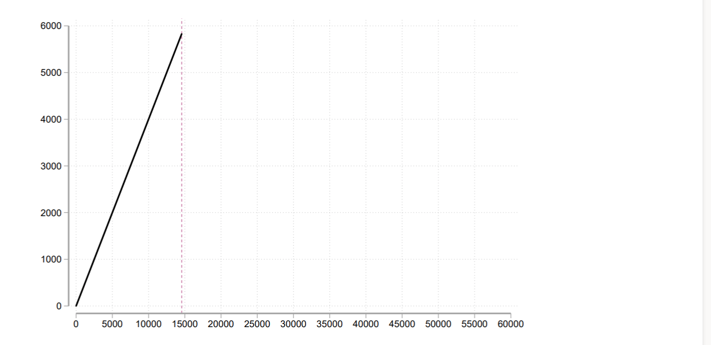
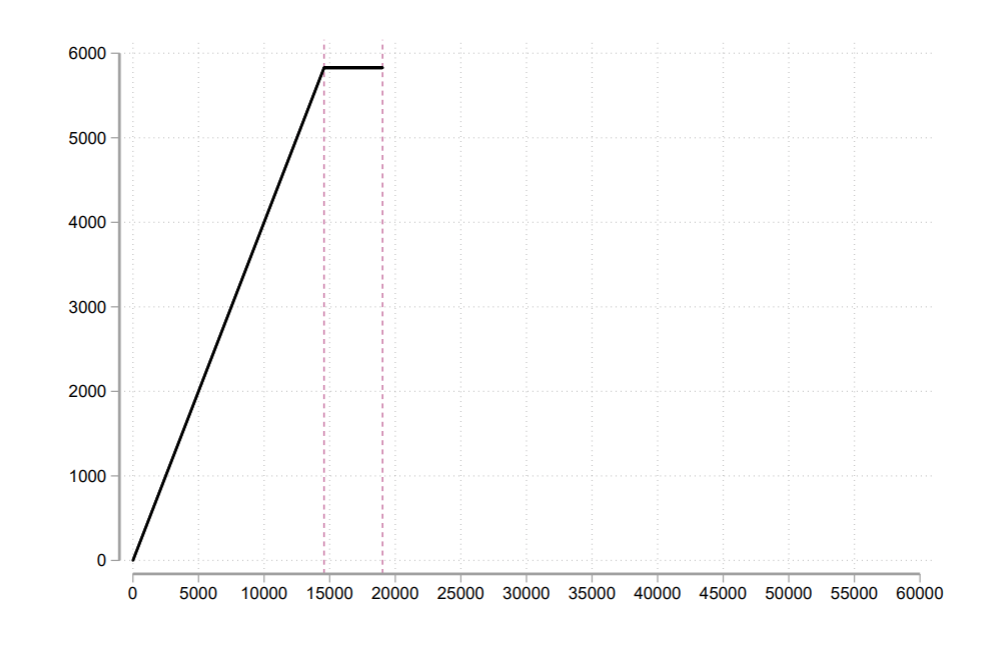
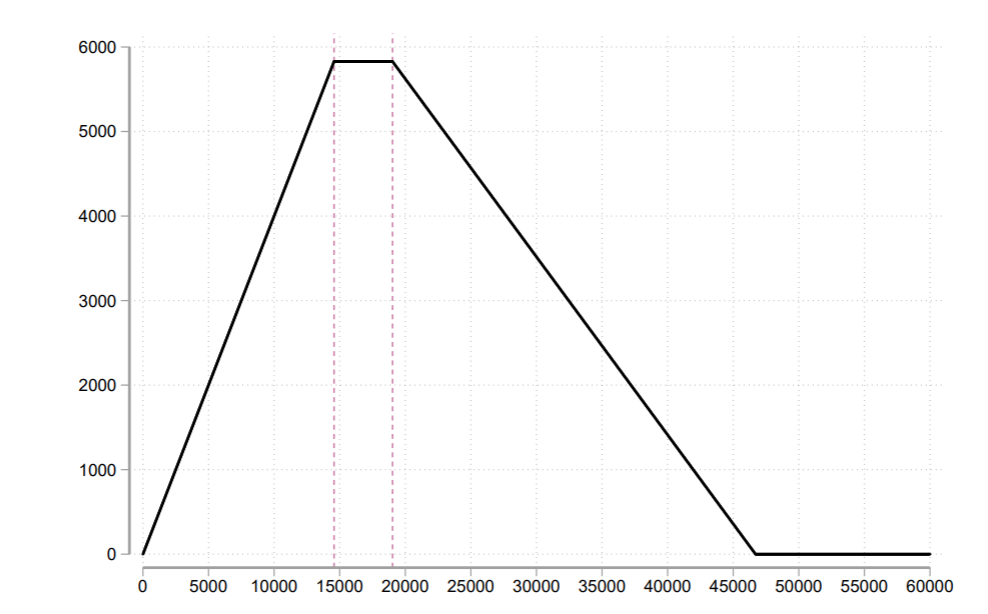

12 Eissa & Liebman (1996)
Difference-in-Differences - Static
Recall Lecture 1.2 Causal Inference,
12.1 (Imbens and Rubin, 2015, p. 6)
- “First, the definition of the causal effect depends on the potential outcomes, but it does not depend on which outcome is actually observed.”
- “Second, the causal effect is the comparison of potential outcomes, for the same unit, at the same moment in time post-treatment. In particular, the causal effect is not defined in terms of comparisons of outcomes at different times.1”
12.2 Set-up: 2-group-2-period
The simple 2-group-2-period difference-in-differences set-up has the following characteristics,
- Two periods of data: either panel (longitudinal) or repeated cross-section
- A control group that is never-treated2
- Treatment is absorbing: ‘always-on’3
- Typically, the treatment takes place in the second period.
Assuming additive treatment effects,
\[ Y_{it} = \begin{cases} Y_{it}(0) & \text{if } t < t_0 \\ Y_{it}(0) + D_i\cdot(Y_{it}(1)-Y_{it}(0)) & \text{if } t \geq t_0 \end{cases} \]
\[ = Y_{it}(0) + T_t\cdot D_i\cdot(Y_{it}(1)-Y_{it}(0)) \]
where, - ( \(T_t\) ): dummy variable ( \(=1\) ) after period of treatment (( \(t_0\) ) onwards). - ( \(D_i\) ): dummy variable ( \(=1\) ) if unit ( \(i\) ) is in the treated group, 0 otherwise.
12.3 Exclusion Restrictions
The above set-up implies the following exclusion restrictions,4
and,
and,
12.4 Dynamic Confounding Factors
Let us consider the first (dynamic) difference with just two periods of data,
\[ \begin{aligned} &E[Y_{it}|D_i=1,T_t=1]-E[Y_{it}|D_i=1,T_t=0] \\ =&E[Y_{it}(1)|D_i=1,T_t=1]-E[Y_{it}(0)|D_i=1,T_t=0] \\ =&\underbrace{E[Y_{it}(1)|D_i=1,T_t=1]-E[Y_{it}(0)|D_i=1,T_t=1]}_{\text{ATT in period } t_0} \\ &\underbrace{+E[Y_{it}(0)|D_i=1,T_t=1]-E[Y_{it}(0)|D_i=1,T_t=0]}_{\text{(dynamic) confounding factors}} \end{aligned} \]
Once again, we don’t observe the counterfactual for the treated group. As such, the CEF does not trace out a causal relationship.
Notice, however, that for the untreated group,
\[ \begin{aligned} &E[Y_{it}|D_i=0,T_t=1]-E[Y_{it}|D_i=0,T_t=0] \\ =&E[Y_{it}(0)|D_i=0,T_t=1]-E[Y_{it}(0)|D_i=0,T_t=0] \end{aligned} \]
which looks very similar to,
\[ \color{red}{E[Y_{it}(0)|D_i=1,T_t=1]} \] \[ -E[Y_{it}(0)|D_i=1,T_t=0] \] (Note to myself: Find a way to change this)
from the treated group.
With this assumption and the above exclusion restrictions, we have identification of the Average Treatment Effect of the Treated.
With this assumption we can identify the ATT,
\[ \begin{aligned} &\big[E[Y_{it}|D_i=1,T_t=1]-E[Y_{it}|D_i=1,T_t=0]\big]\\ &-\big[\textcolor{blue}{E[Y_{it}|D_i=0,T_t=1]-E[Y_{it}|D_i=0,T_t=0]}\big] \\ =&\big[E[Y_{it}(1)|D_i=1,T_t=1]-E[Y_{it}(0)|D_i=1,T_t=0]\big] \\ &-\big[\textcolor{blue}{E[Y_{it}(0)|D_i=0,T_t=1]-E[Y_{it}(0)|D_i=0,T_t=0]}\big] \\ =&\big[E[Y_{it}(1)|D_i=1,T_t=1]\textcolor{red}{-E[Y_{it}(0)|D_i=1,T_t=1]}\big] \\ &+\big[\textcolor{red}{E[Y_{it}(0)|D_i=1,T_t=1]}-E[Y_{it}(0)|D_i=1,T_t=0]\big] \\ &-\big[\textcolor{blue}{E[Y_{it}(0)|D_i=0,T_t=1]-E[Y_{it}(0)|D_i=0,T_t=0]}\big] \\ =&\underbrace{\big[E[Y_{it}(1)|D_i=1,T_t=1]\textcolor{red}{-E[Y_{it}(0)|D_i=1,T_t=1]}\big]}_{\text{ATT in period } t_0} \end{aligned} \]
where the two penultimate lines cancel one another under parallel trends. Hence, the name difference-in-differences.
12.5 Mapping to Linear Model
Let’s consider the CEF of ( \(Y_{it}^{obs}\) ),
\[ E[Y_{it}|D_i,T_t] \]
where, ( \(Y_{it} = Y_{it}(0) + T_t \cdot D_i(Y_{it}(1) - Y_{it}(0))\) ).5
\[ \begin{aligned} E[Y_{it}|D_i,T_t] &= E[Y_{it}(0)|D_i,T_t] + T_t \cdot D_i E[(Y_{it}(1) - Y_{it}(0))|D_i,T_t] \\ &= E[Y_{it}(0)|D_i,T_t=0] \\ &\quad + T_t \cdot \left( E[Y_{it}(0)|D_i,T_t=1] - E[Y_{it}(0)|D_i,T_t=0] \right) \\ &\quad + T_t \cdot D_i \cdot E[(Y_{it}(1) - Y_{it}(0))|D_i,T_t] \end{aligned} \]
Under parallel trends,
\[ \begin{aligned} &E[Y_{it}(0)|D_i,T_t=1]-E[Y_{it}(0)|D_i,T_t=0] \\ &= \textcolor{blue}{E[Y_{it}(0)|T_t=1]-E[Y_{it}(0)|T_t=0]} \\ &= \textcolor{blue}{\delta} \end{aligned} \]
a constant! So, we have
\[ \begin{aligned} E[Y_{it}|D_i,T_t] &= E[Y_{it}(0)|D_i,T_t=0] \\ &+ T_t \cdot \left( \textcolor{blue}{\underbrace{E[Y_{it}(0)|T_t=1]-E[Y_{it}(0)|T_t=0]}_{\delta}} \right) \\ &+ T_t \cdot D_i \cdot E[(Y_{it}(1)-Y_{it}(0))|D_i,T_t] \end{aligned} \]
We can then expand (\(E[Y_{it}(0)|D_i, T_t=0]\))
\[ \begin{aligned} E[Y_{it}(0)|D_i,T_t=0] &= E[Y_{it}(0)|D_i=0,T_t=0] \\ &+ D_i \cdot \left( \textcolor{red}{E[Y_{it}(0)|D_i=1,T_t=0] - E[Y_{it}(0)|D_i=0,T_t=0]} \right) \\ &= \alpha + \psi D_i \end{aligned} \]
where \(\{ \alpha, \psi \}\) are two more constants. So, we have
\[ \begin{aligned} E[Y_{it}|D_i,T_t] &= \underbrace{E[Y_{it}(0)|D_i=0,T_t=0]}_{\alpha} \\ &+ D_i \cdot \left( \textcolor{red}{\underbrace{E[Y_{it}(0)|D_i=1,T_t=0] - E[Y_{it}(0)|D_i=0,T_t=0]}_{\psi}} \right) \\ &+ T_t \cdot \textcolor{blue}{\delta} + T_t \cdot D_i \cdot E[(Y_{it}(1)-Y_{it}(0))|D_i,T_t] \end{aligned} \]
Finally, we can show,
\[ \begin{aligned} &T_t \cdot D_i \cdot E[(Y_{it}(1) - Y_{it}(0))|D_i,T_t] \\ &= T_t \cdot D_i \cdot \textcolor{purple}{E[(Y_{it}(1) - Y_{it}(0))|D_i=1,T_t=1]} \\ &= T_t \cdot D_i \cdot \tau_{ATT}(t_0) \end{aligned} \]
If we want, we can assume the ATT is static: \(\tau_{ATT}(t_0) = \tau_{ATT} \quad \forall t\).
\[ \begin{aligned} E[Y_{it}|D_i,T_t] &= \alpha + \textcolor{red}{\psi}D_i + \textcolor{blue}{\delta}T_t \\ &+ T_t \cdot D_i \cdot \textcolor{purple}{\underbrace{E[(Y_{it}(1) - Y_{it}(0))|D_i=1,T_t=1}_{\tau_{ATT}(t_0)}} \\ &= \alpha + \textcolor{red}{\psi}D_i + \textcolor{blue}{\delta}T_t + \textcolor{purple}{\tau_{ATT}(t_0)} T_t \cdot D_i \end{aligned} \]
- Note: assumption concerning the CEF.
- Note: includes treatment group status.
Thus,
\[ \underbrace{E[Y_{it}(0)|D_i=0,T_t=1]}_{\alpha + \delta} - \underbrace{E[Y_{it}(0)|D_i=0,T_t=0]}_{\alpha} = \delta \]
and,
\[ \underbrace{\textcolor{red}{E[Y_{it}(0)|D_i=1,T_t=1]}}_{\alpha + \psi + \delta} - \underbrace{E[Y_{it}(0)|D_i=1,T_t=0]}_{\alpha + \psi} = \delta \]
12.6 Graphical Example
Figure 12.1: Difference-in-Differences Plot 1 Figure 12.2: Difference-in-Differences Plot 2 12.7 DiD and CIA
Do we need the CIA/Unconfoundedness assumption?
NO, Why not?We do not identify the ATT as the coefficient on ( \(D_i\) ).
With two sources of variation, both time and treatment group, we can identify the selection term in the pre-period,
\[ E[Y_i(0)|D_i=1,T_i=0] - E[Y_i(0)|D_i=0,T_i=0] = \psi \]
Key assumption: selection doesn’t change over time; i.e., parallel/common trends.
12.8 Selection
Let us consider the first (cross-sectional) difference,
\[ \begin{aligned} &E[Y_{it}|D_i=1,T_t=1] - E[Y_{it}|D_i=0,T_t=1] \\ &= E[Y_{it}(1)|D_i=1,T_t=1] - E[Y_{it}(0)|D_i=0,T_t=1] \\ &= \underbrace{E[Y_{it}(1)|D_i=1,T_t=1] \textcolor{red}{- E[Y_{it}(0)|D_i=1,T_t=1]}}_{\text{ATT in period } t_0} \\ &\quad \underbrace{\textcolor{red}{+ E[Y_{it}(0)|D_i=1,T_t=1]} - E[Y_{it}(0)|D_i=0,T_t=1]}_{\text{selection between groups}} \end{aligned} \]
which is very similar to,
\[ E[Y_{it}(0)|D_i=1,T_t=0] - E[Y_{it}(0)|D_i=0,T_t=0] \]
from the first period.
With the parallel trends assumption,
Selection is given by
\[ \underbrace{\textcolor{red}{E[Y_{it}(0)|D_i=1,T_t=1]}}_{\alpha + \psi + \delta} - \underbrace{E[Y_{it}(0)|D_i=0,T_t=1]}_{\alpha + \delta} = \psi \]
and
\[ \underbrace{E[Y_{it}(0)|D_i=1,T_t=0]}_{\alpha + \psi} - \underbrace{E[Y_{it}(0)|D_i=0,T_t=0]}_{\alpha} = \psi \]
- Permits level differences between treatment and control.
- Selection term is identified in pre-period.6
12.9 Difference-in-differences
Again we can identify the ATT as a difference-in-differences,
\[ \begin{aligned} &\left[E[Y_{it}|D_i=1,T_t=1] - \textcolor{blue}{E[Y_{it}|D_i=0,T_t=1]}\right] \\ &- \left[E[Y_{it}|D_i=1,T_t=0] - \textcolor{blue}{E[Y_{it}|D_i=0,T_t=0]}\right] \\ &= \left[E[Y_{it}(1)|D_i=1,T_t=1] - \textcolor{blue}{E[Y_{it}(0)|D_i=0,T_t=1]}\right] \\ &- \left[E[Y_{it}(0)|D_i=1,T_t=0] - \textcolor{blue}{E[Y_{it}(0)|D_i=0,T_t=0]}\right] \\ &= \underbrace{\left[E[Y_{it}(1)|D_i=1,T_t=1] \textcolor{red}{- E[Y_{it}(0)|D_i=1,T_t=1]}\right]}_{\tau_{ATT}(t_0)} \\ &+ \underbrace{\left[\textcolor{red}{E[Y_{it}(0)|D_i=1,T_t=1]} - \textcolor{blue}{E[Y_{it}(0)|D_i=0,T_t=1]}\right]}_{= \psi} \\ &- \underbrace{\left[E[Y_{it}(0)|D_i=1,T_t=0] - \textcolor{blue}{E[Y_{it}(0)|D_i=0,T_t=0]}\right]}_{= \psi} \end{aligned} \]
- Parallel trends allow us to pin down the selection component.
- We do not need unconfoundedness to rule out selection.
12.10 DiD in Practice
12.10.1 Multi-group-2-period
In a ‘natural’ experiment setting, treatment is almost always assigned at a group-level setting: geographical, demographic, etc.
Let (\(Y_{itc}\)) be the outcome of unit (\(i\)) in period ( \(t\)), member of assignment-group (\(c(i)\)),
\[ c(i) \in \{1, \ldots, c_0, c_0 + 1, \ldots, C\} \]
where groups are:
- Treated: ( \(1\), \(\ldots, c_0\) ) (no. treated groups = ( \(c_0\) ))
- Control: ( \(c_0 + 1, \ldots, C\) ) (no. control groups \(=\) ( \(C - c_0\) ))
Thus,
\[ D_i = D_{c(i)} = \mathbf{1}\{c(i) \leq c_0\} \]
12.11 Group Assignment
The relevant estimating equation is then,
\[ Y^{obs}_{itc} = \alpha + \psi D_{c} + \delta T_t + \beta D_{c} \cdot T_t + \varepsilon_{itc} \]
- A model that can be estimated using repeated cross-sections or panel/longitudinal data.7
12.12 Group Fixed Effects
Fixed effects notation is used extensively in Microeconometrics.
Given a set of assignment-groups ( \(c = 1, 2, 3, \ldots, C\)), assignment-group FE’s can be written as,
\[ \psi_c = \sum_{j=1}^{C} \psi_j \mathbf{1}\{c = j\} \]
- A dummy variable for each value.
- Standard to drop the constant term in the regression equation.
- Implicitly, this is a group-specific constant.
Parallel Trends Assumption (parametric version)
\[ E[Y_{it}(0)|D_c,T_t] = \psi_c + \delta T_t \]
Consider the two estimating equations,
\[ Y^{obs}_{itc} = \alpha + \psi D_c + \delta T_t + \beta_1 D_c \cdot T_t + \varepsilon_{itc} \]
and
\[ Y^{obs}_{itc} = \psi_c + \delta T_t + \beta_2 D_c \cdot T_t + \epsilon_{itc} \]
- (_2 = _1) IF group size does not change with time; i.e., a balanced panel of groups with stable group sizes. Group size need not be equal.
- Does not introduce bias.
- But, ( se(_2) ) tends to be smaller than ( se(_1) )8.
With group FE’s we typically explain more of the variation in ( Y(0) ).
12.13 Example: UK Policy
Suppose Scotland and Wales introduce a policy to restrict access to fast food in year (\(t_0\)) and you have individual-level measures of BMI from across the UK.
($D_c = $)
Estimating equations,
\[ Y^{obs}_{itc} = \alpha + \psi D_c + \delta T_t + \beta_1 D_c \cdot T_t + \varepsilon_{itc} \]
and
\[ Y^{obs}_{itc} = \underbrace{\sum_{j=1}^{4} \psi_j \mathbf{1}\{c = j\}}_{\psi_c} + \delta T_t + \beta_2 D_c \cdot T_t + \epsilon_{itc} \]
12.14 Unit Fixed Effects
Suppose, you have panel/longitudinal data, then the specification,
\[ Y^{obs}_{itc} = \alpha_i + \delta T_t + \beta_3 D_c\cdot T_t + \upsilon_{itc} \]
will typically yield an even more efficient estimator.
- \(\hat{\beta}_3=\hat{\beta}_2=\hat{\beta}_1\) IF all units are observed in all periods; i.e., a balanced panel of units.
- Does not introduce bias.
- \(se(\hat{\beta}_3)\) tends to be smaller than \(se(\hat{\beta}_2)\), which tends to be smaller than \(se(\hat{\beta}_1)\).
- Increases the power of the test for \(H_0: \tau_{ATT}=0\).
- Higher dimensions of FEs tend to yield lower variance estimators.
12.15 Adding Covariates
There are two reasons to add GOOD covariates to the model:
- Improve the precision of estimates and increase power.
- For identification (when unconditional parallel trends fail).
Conditional Parallel Trends Assumption (General version)
\[ \begin{aligned} &E[Y_{it}(0)|D_i=0,T_t=1,X_i'] - E[Y_{it}(0)|D_i=0,T_t=0,X_i'] \\ &= E[Y_{it}(0)|D_i=1,T_t=1,X_i'] - E[Y_{it}(0)|D_i=1,T_t=0,X_i'] \end{aligned} \]
or
Conditional Parallel Trends Assumption (CEF version)
\[ E[Y_{it}(0)|D_i,T_t,X_{it}] = \alpha + \psi D_i + \delta T_t + X_{it}'\gamma \]
- A weaker assumption.
- In a balanced panel, time-invariant differences across groups are captured by treatment-group dummy (or assignment-group/unit FEs).
Warning: > If estimates are sensitive to the inclusion of good covariates, it suggests that one of the identifying assumptions may have failed. Why is the covariate composition of the groups changes differentially over time? Could be due to non-parallel trends or switching between groups.
With only 2 periods of data, there is no test of the parallel trends assumption.
- Intuitively, similar groups may be more likely to follow parallel trends.
- Argument for matching on covariates in pre-period. For example, PSM-DID.
12.16 DiD in Practice - Multiple Time Periods
Suppose you had more than 2 periods of data, you might then choose to add time-fixed effects,
\[ Y^{obs}_{itc} = \psi_c + \delta_t + \beta_3 D_c\cdot T_t + \upsilon_{itc} \]
where \(T_t=\mathbf{1}\{t\geq t_0\}\) and \(t_0\) is the period of treatment.
- However, we first need to discuss dynamic treatment effects.
Next lecture.
12.17 Card & Krueger (1994)
This paper9,
arguably, established difference-in-difference as the central tool in Applied Microeconomics research;
turned the literature on the minimum wage upside down;
won David Card the Nobel Prize in Economics;
and started the closest thing to a fight in academic Economics.10
12.17.1 Pre-1990’s Literature
- Most of the literature supported the idea that higher minimum wages reduce employment.
- Wellington (1991) & Brown et al. (1983): A 10% increase in minimum wage reduces teen employment by 1%.
- Largely based on time-series evidence (Brown et al., 1982) or cross-country studies.
“Isolating the impacts of labor market institutions is inherently difficult… Identification issues essentially result from the endogeneity of labor market institutions and the interactions between them… makes it difficult to attribute variations in outcomes to the institutions themselves, rather than other features of the societies in which they exist.” - Baetcherman (2012)
Card & Krueger (AER, 1994) is a seminal paper in this literature11,
- Increase in New Jersey minimum wage from $4.25 to $5.05, April 1992.
- Examine the impact on employment at fast food outlets (low wage jobs).
- Use Pennsylvania as a control group in a DiD research design.
- Find no evidence of a negative employment effect.
This paper highlights the fact that you can make strong conclusions from what is effectively a very simple research design.


12.18 Legislative Change
This minimum wage change was not unexpected:
- Federal minimum wage is the floor to all state level minimum wages.
- Federal increase from $3.35 to $3.80 in April 1990.
- Federal increase from $3.80 to $4.25 in April 1991.
- New Jersey chose to increase its own minimum wage to $5.05 effective April 1992, giving it the highest minimum wage in the country.
- Opposed by business leaders, but the opposition lost an appeal (March, 1992) by a close margin.
This last-minute appeal and close election do create some uncertainty.
12.19 Research Design
Card & Krueger (1994) implement a basic difference-in-difference research design
\[ \tau_{ATT} = \big(E[Y_{it}|T_t=1,D_i=1] - E[Y_{it}|T_t=0,D_i=1]\big) - \big(E[Y_{it}|T_t=1,D_i=0] - E[Y_{it}|T_t=0,D_i=0]\big) \]
where \(T_t = \mathbf{1}{\text{after April 1992}}\), and
\[ D_i = \begin{cases} 1 & \text{New Jersey} \\ 0 & \text{Pennsylvania} \end{cases} \]

Conclusion,- No evidence of a negative effect, as competitive models would predict.
- If anything, some evidence of a small positive effect, as suggested by monopsonistic models.
- Card & Krueger (1994) don’t show pre-trends to help persuade you that the parallel trends assumption is likely to hold.
- After this paper comes the rebuttal by Neumark & Wascher (2000, AER), followed immediately by a response from Card & Krueger (2000, AER).
- This is just round 1 of what is a multi-round debate. The discussion has now shifted away from state-level minimum wages to the study of city-specific policies.
13 Dynamic Treatment Effects
13.1 Set-up
Today’s discussion will concern,
Once treatment is applied it remains fixed.
- If treatment is temporary, the model will capture long-term effects.
13.2 Dynamic TE’s
Suppose that the treatment effect is indeed dynamic:
It helps to normalize time to event-time,
\[ s=t-S_{i} \]
where (\(S_i\)) is the time period in which unit (\(i\)) first receives the treatment.
- (\(S_i\)) could be determined at the assignment-group level,
\[ S_i=S_c \]
Given time periods (\(t=0,1,...T\)), ( \(s=-T,..,-1,0,1,...,T\)). The dynamic treatment effect is specified as,
- The relevant unit of time is event-time, not calendar time.12
- In a 2-group-multiple-period setting ( \(s\) ) does not vary independently of ( \(t\) ) for the treated units.
- This set-up becomes more useful when describing multi-cohort settings.
13.3 Dynamic TE’s
- In a staggered-DiD model or event-study, there are multiple cohorts.
- For never treated groups, \[ S_i = \infty \]
- A never treated and not-yet/future treated group are NOT the same.
13.4 2-group-2-period
Recall from lecture 4.1,
\[ Y^{obs}_{it} = \alpha + \psi D_i + \delta T_t + \beta D_i \cdot T_t + \varepsilon_{it} \]
Using this new notation, we can rewrite this equation as,
\[ Y^{obs}_{it} = \psi D_i + \delta_t + \beta \mathbf{1}\{s \geq 0\} + \varepsilon_{it} \]
- Time FEs are the same as a post-treatment dummy with 2 periods.
- For the treated group, ( \(S_i = t_0\) ).
- For the control group, ( $S_i = $ ).
- ( \(D_i \cdot T_t = \mathbf{1}{t \geq S_i} = \mathbf{1}{s \geq 0}\)); which implies, \[ \Rightarrow \mathbf{1}\{s = t - \infty \geq 0\} = 0 \quad \text{**always.**} \]
13.5 Multi-group-2-period
Recall from lecture 4.1,
\[ Y^{obs}_{itc} = \psi_c + \delta T_t + \beta D_c \cdot T_t + \varepsilon_{itc} \]
Using this new notation, we can rewrite this equation as,
\[ Y^{obs}_{itc} = \psi_c + \delta_t + \beta \mathbf{1}\{s \geq 0\} + \varepsilon_{itc} \]
- For the treated groups (( \(c \leq c_0\) )), ( \(S_c = t_0\) ).
- For the control groups (( \(c > c_0\))), ( $S_c = $ ).
- ( \(D_c \cdot T_t = \mathbf{1}{t \geq S_c} = \mathbf{1}{s \geq 0}\) )
- In both these applications, there is a one-to-one mapping from event to calendar time.
14 Multi-Period DiD
We can define a more flexible version of the parallel trends,13
or,
14.1 Multi-Period DiD
However, if we specify the model as,
\[ Y^{obs}_{it} = \psi D_i + \delta_t + \beta \mathbf{1}\{s \geq 0\} + \upsilon_{it} \]
where (\(\beta\)) captures the ATT in all post-treatment periods, then we have proposed a linear regression model that best characterizes,
\[ \tau_{ATT}(s) = E[Y_{it}(1) - Y_{it}(0)|D_i = 1, t = S_i + s] = \tau_{ATT} \quad \forall \; s \geq 0 \]
14.2 Dynamic DiD
If TEs are dynamic, it is better to estimate either,
- Semi-dynamic model,
\[ Y^{obs}_{it} = \psi D_i + \delta_t + \sum_{j \geq 0} \beta_j \mathbf{1}\{s = j\} + \upsilon_{it} \]
- Dynamic model,
\[ Y^{obs}_{it} = \psi D_i + \delta_t + \sum_{j \neq -1} \beta_j \mathbf{1}\{s = j\} + \upsilon_{it} \]
- In applied settings, you should always specify such a model with time FEs, and not a single post-treatment dummy. Failure to do so will typically lead to a false counterfactual.14
- You have to normalize 1 period. It does not have to be ( s = -1 ), but should be a pre-period.
14.3 Dynamic DiD (Continued)
Consider the dynamic specification,
\[ Y^{obs}_{it} = \psi D_i + \delta_t + \sum_{j \neq -1} \beta_j \mathbf{1}\{s = j\} + \upsilon_{it} \]
- We must exclude at least one of the event-time dummies. Standard to exclude pre-treatment period.
QUESTION: Assuming parallel trends and all necessary exclusion restrictions, how would we define ( \(\beta_2\) )?
Proof:
Single period of treatment: \(t_0\)
Control group \(S_i = \infty\)
\(\beta_2\) event-time \(s = 2\).
\[ 1 \{S = 2\} = D_i \cdot 1 \{t = t_0+2\}. \]
\[ \beta_1 = \left[ E[Y_t | D_i=1, t=t_0+2] - E[Y_t | D_i=0, t=t_0+2] \right] - \left[ E[Y_t | D_i=1, t=t_0-1] - E[Y_t | D_i=0, t=t_0-1] \right] \]
\[ = E[Y_t(1) - Y_t(0) | D_i=1, t=t_0+2] \]
\[ + \textcolor{red}{E[Y_t(0) | D_i=1, t=t_0+2] - E[Y_t(0) | D_i=0, t=t_0+2]} \]
\[ - \textcolor{red}{E[Y_t(1) | D_i=1, t=t_0-1] - E[Y_t(0) | D_i=0, t=t_0-1]} \]
Where \(\textcolor{red}{\phi + \delta_{t2}}\) and \(\textcolor{red}{\delta_{t-1}}\) are the effects to be controlled for.
14.4 Dynamic DiD (Exclusion Restrictions)
Notice: - Linear model can identify treatment effects up to a normalized period. - We must assume,
- Pre-emptive behaviour biases both pre-treatment and post-treatment TE estimates.
14.5 Test parallel trends
Assuming no pre-emptive behaviour, the test,
\[ H_0: \beta_s = 0 \quad \forall \quad s < 0 \]
is a valid test for parallel trends in the pre-treatment period.
\[ \begin{aligned} \beta_s = & \left[\underbrace{E[Y_{it}|D_i = 1, t = t_0 + s] - E[Y_{it}|D_i = 1, t = t_0 - 1]}_{\text{Pre-trend of treated.}}\right] \\ & - \left[\underbrace{\textcolor{blue}{E[Y_{it}|D_i = 0, t = t_0 + s] - E[Y_{it}|D_i = 0, t = t_0 - 1]}}_{\text{Pre-trend of control.}}\right] \end{aligned} \]
for (\(s \< 0\)) and (\(s \neq -1\)).15
14.6 Dynamic DiD (Visualization)
The problem can be how to distinguish between, - a failure of parallel trends, - and pre-emptive behaviour.
[Alternative DID Plot]
14.7 Dynamic DiD (Renormalization)
If there appears to be pre-emptive behaviour - and a reason for its presence - you can always renormalize the excluded base period.
Here goes the other figure (I do not have it yet)
include another graph here
14.8 Next-up
- ‘Things Fall Apart’ - The problems with dynamic/staggered DiD and two-way FEs
- What to do.
- Generalized two-way FEs models
- Synthetic Control
14.9 Example: Eissa & Liebman (1996)
Example: Eissa & Liebman (1996)
14.10 Set-up: EITC
Countries create tax credits for a number of reasons, these are typically after tax reimbursements based eligibility in certain criteria. Many are simply used to transfer income to a targeted population, and do not (intentionally) induce any behavioural response.
- However, the Earned Income Tax Credit (EITC) is a uniquely targeted public policy that aims to both assist poorer, more vulnerable households while also incentivizing labour force participation (Holz & Scholz, 2003).
The EITC aims to solve the following problem:
The tax credit increases in value with your earned income up to a threshold…

Figure: The tax credit is 40% of earned income for the first $14570 (2019 parameters based on single earner with two children)
…at which point it is flat up to a second threshold…

Figure: The maximum is $5828 (2019 parameters based on single earner with two children)
… and then is fazed out

Figure: The phase out rate is 21.06% which ends at $46703 (2019 parameters based on single earner with two children)
Set up:
PHASE IN: acts as a subsidy to work: incentive to earn more
PLATEAU: no subsidy, and hence no additional incentive to work more
PHASE OUT: effectively a tax on every additional dollar earned: disincentive to earn more
Therefore, the EITC should have a differential impact on hours worked versus participation depending on an individual’s income level.
One of the seminal papers on this topic is Eissa & Liebman (QJE, 1996) “Labor responses to the earned income tax credit”.
The Tax Reform Act of 1986 made the EITC more generous.
Exploit the fact that the EITC structure differentially treats single women w/w/o children.16
Simple difference-in-difference research design: single women with (without) children are the treated (control) group.
Single mothers were the largest recipients of EITC (48%).
Estimate that the expansion increased labour supply of women with children by 2.8% over that of single women without children.
The policy variation introduced by the reform is depicted below.

And here is the author’s description of this graph.

The authors estimate two specifications:
A difference-in-difference specification within a probit model, as labour force is a discrete choice17.
\[P(lfp_{it}=1) = \Phi\left(\alpha + \beta Z_{it}+\gamma_0kids_i + \gamma_1post86_t+\gamma_2(kids\times post86)_{it}\right)\]
A standard linear specification
\[Annual\;Hours_{it} = \alpha + \beta Z_{it}+\gamma_0kids_i + \gamma_1post86_t+\gamma_2(kids\times post86)_{it}\]
Sample of unmarried women (aged 16-44), March CPS survey. Pre-period = 1985-1987 and post=1989-1991. Data includes tax records from the previous year.
Regarding participation, the results are unambiguously positive, as no one receives less of an incentive to work.


While the impact of the EITC expansion on participation should be unambiguously positive, because no-one receives less of an incentive to work, the impact on hours worked is more ambiguous.


- Eissa & Liebman find no evidence of an hours effect, which could be the result of tax complexity: workers don’t really understand how the EITC works, and don’t know if they will receive the credit.
14.11 Other studies
See also Dahl & Lochner (2012) for a study that evaluates the impact on child outcomes. This study employs an IV research design.
Emphasis added.↩︎
If you use an always-treated control group you would need to assume static treatment effects.↩︎
More relevant for multiple periods.↩︎
Particularly important in observational studies with group and/or irregular assignment.↩︎
Remember, this equation implies our exclusion restrictions.↩︎
Emphasizes importance of ‘no pre-emptive behaviour’ assumption.↩︎
This is also true for unit-level assignment, assuming sample selection of the subsequent cross-sections is independent of treatment.↩︎
`tends to be’, because you also decrease the degree of freedom.↩︎
Angrist & Pischke attribute the first use of DiD in Economics to Obenauer & von den Nienburg (1915) (see page 228 of Mostly Harmless Econometrics).↩︎
The debate between Card and Krueger (since deceased, 2019), and Neumark and Wascher is ongoing.↩︎
And Katz & Krueger (ILR Review, 1992)↩︎
This rules out dynamic TEs which change over (calendar) time.↩︎
For example, see discussion on Eissa & Liebman (1996).↩︎
Can you demonstrate this?↩︎
Here, (\(s=-1\)) is the normalized period.↩︎
Only after 1994 did the EITC become available to low-income workers without children.↩︎
Note, authors tend to avoid this approach now and simply estimate a linear probability model. More on this in Weeks 9 & 10.↩︎